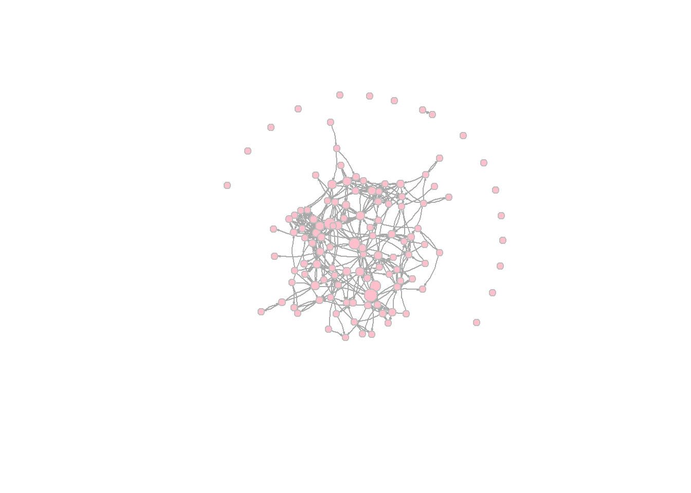
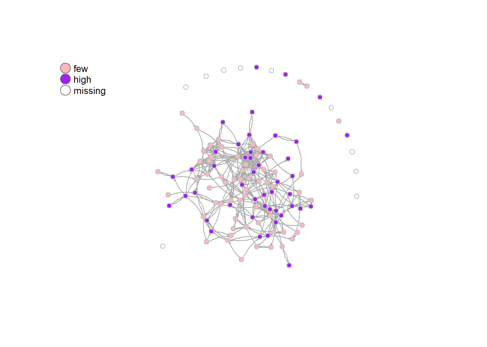
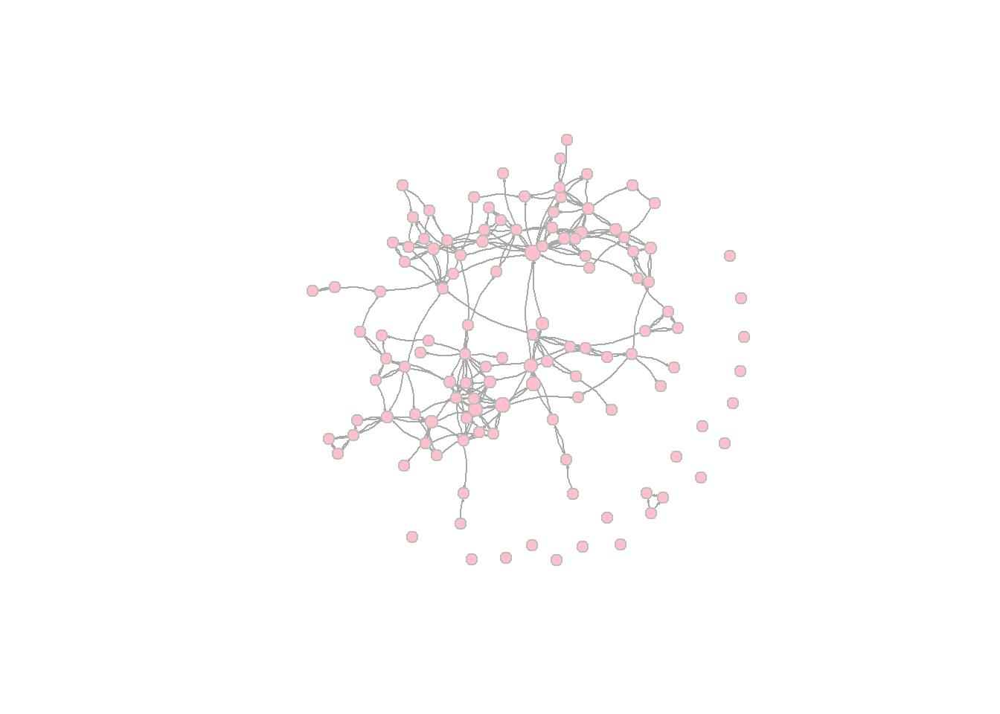
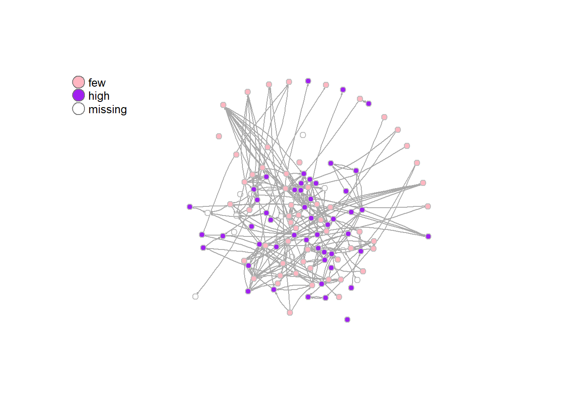

To answer my research question, I want to see whether people’s attitudes are affected by the people they interact with. As I have a directed network, I can look at the effect of outgoing, incoming and reciprocated relations. I would expect there to be the biggest influence effect when there is a reciprocated tie, as that means that the ego and alter are probably closer. However, outdegree could also be really interesting, as you may change your attitude, because you want to be friends with someone, so you try to look more like them, in order to (hopefully) get a reciprocated tie. However, that is not really my research question, so for now I will focus on reciprocated ties.
RSiena has a built-in effect called “Reciprocated degree effect (recipDeg)” Ripley et al. (2026), which (seems to) look at how much more similar one becomes to people who you have a reciprocated tie with. The formula is as follows:
\[ s_{i}^{beh}(x , z) = z_{i}\sum j x_{ij}x_{ji} \]
Part by part, what does this formula mean?
\[ s_{i}^{beh}(x , z) \]
= Similarity of the behaviour between X (dependent network variable) and Z (behavioural dependent variable (centred))
\[ \sum j x_{ij}x_{ji} \]
This calculates the sum of reciprocated ties for ego (j), by multiplying the outgoing ties from ego (X_{ij}), with the incoming ties (X_{ji}). This means if there is either no outgoing or incoming tie, the tie is not being counted (as it is multiplied with 0), meaning that only the reciprocated ties are counted.
This sum is then multiplied by
\[ z_{i} \]
Or in words: the value of the behavioural variable for ego. So this formula multiplies the amount of reciprocated ties by the value of the behavioural value of ego.
Create an igraph object
library(igraph)
copy_strong_netw_t1 <- strong_netw_t1
copy_strong_netw_t1[is.na(copy_strong_netw_t1)] <- 0
g_strong_t1 <- igraph:: graph_from_adjacency_matrix(copy_strong_netw_t1, mode = "directed")pretty_graph_t1 <- simplify(g_strong_t1)
V(pretty_graph_t1)$size = igraph:: betweenness(pretty_graph_t1, normalized = T, directed = T) * 250 + 50
plot(pretty_graph_t1,
vertex.color = "pink",
vertex.frame.color = "gray",
vertex.label = NA,
vertex.label.dist = 0.5,
edge.curved = 0.2,
edge.arrow.size = 0.1,
margin = 0.01,
rescale = FALSE, ylim = c(-10,10),
add.legend = TRUE)
Variable based on civil engagement attitudes Create CE variable
unloadNamespace("sna")
library(tidyverse)
IC_df <- as.data.frame(T1civeng[[1]])
IC_df$missings <- rowSums(is.na(IC_df))
IC_df$ce_t1 <- ifelse(IC_df$missings <= 1, rowMeans(IC_df[,1:4]), NA)
IC_df <- IC_df %>%
rownames_to_column(var = "id")Create plot, with differing colour for CE
# DOESNT WORK
IC_df$ce_t1_cat <- cut(IC_df$ce_t1,
breaks = c(0, 1, 2, 3, 4, 5, 6, 7),
labels= c('none', 'very few', 'fewer', 'few', 'moderate', 'high', 'very high'))
table(IC_df$ce_t1, IC_df$ce_t1_cat)
#Categories tbd, but for now okay
IC_df <- IC_df %>%
dplyr::mutate(colour = dplyr::recode(ce_t1_cat,
"none" = "#FFD1DC",
"very few" = "#FFB6C1",
"fewer" = "#FFA6C9",
"few" = "#F77FBE",
"moderate" = "#CC3366",
"high" = "#DE5D83",
"very high" = "#DA70D6"))
IC_df <- IC_df %>%
dplyr::mutate(colour = dplyr::recode(ce_t1_cat,
"none" = "red",
"very few" = "orange",
"fewer" = "yellow",
"few" = "green",
"moderate" = "blue",
"high" = "purple",
"very high" = "pink"))
colour <- IC_df$colour
view(colour)IC_df$ce_t1_cat <- cut(IC_df$ce_t1,
breaks = c(0, 5, 7),
labels= c('little', 'many'))
table(IC_df$ce_t1, IC_df$ce_t1_cat)##
## little many
## 3 1 0
## 3.25 1 0
## 3.5 6 0
## 3.75 2 0
## 4 7 0
## 4.25 10 0
## 4.5 15 0
## 4.75 13 0
## 5 7 0
## 5.25 0 13
## 5.5 0 5
## 5.75 0 8
## 6 0 6
## 6.25 0 4
## 6.5 0 2
## 6.75 0 2
## 7 0 6#cutoff point for now completely random
colour <- ifelse(IC_df$ce_t1_cat=='little', "lightpink", "purple")
graph_CE <- igraph:: graph_from_adjacency_matrix(copy_strong_netw_t1, mode = "directed")
graph_CE <- simplify(graph_CE)
V(graph_CE)$size = igraph:: betweenness(graph_CE, normalized = T, directed = T) * 250 + 50layout <- layout_with_fr(graph_CE)
plot1 <- plot(graph_CE,
vertex.color = colour,
vertex.size = 5,
vertex.frame.color = "gray",
edge.curved = 0.2,
edge.arrow.size = 0.1,
vertex.label = NA,
layout = layout)
legend("topleft", c("few", "high", "missing"), pch = 21, col = "#777777", pt.bg = c("lightpink", "purple", "white"), pt.cex = 2,
cex = 0.8, bty = "n", ncol = 1)
Create an igraph object
copy_strong_netw_t2 <- strong_netw_t2
copy_strong_netw_t2[is.na(copy_strong_netw_t2)] <- 0
g_strong_t2 <- igraph:: graph_from_adjacency_matrix(copy_strong_netw_t2, mode = "directed")pretty_graph_t2 <- simplify(g_strong_t2)
V(pretty_graph_t2)$size = igraph:: betweenness(pretty_graph_t2, normalized = T, directed = T) * 250 + 50
plot(pretty_graph_t2,
vertex.color = "pink",
vertex.frame.color = "gray",
vertex.label.color = "black",
vertex.label = NA,
edge.curved = 0.2,
edge.arrow.size = 0.075,
margin = 0.01,
rescale = FALSE, ylim = c(-9,9))
Create variable
IC_df2 <- as.data.frame(T2civeng[[1]])
IC_df2$missings <- rowSums(is.na(IC_df2))
IC_df2$ce_t2 <- ifelse(IC_df2$missings <= 1, rowMeans(IC_df2[,1:4]), NA)
IC_df2 <- IC_df2 %>%
rownames_to_column(var = "id") Create plot, with differing colour for CE
IC_df2$ce_t2_cat <- cut(IC_df2$ce_t2,
breaks = c(0, 5, 7),
labels= c('little', 'many'))
table(IC_df2$ce_t2, IC_df2$ce_t2_cat)##
## little many
## 2.25 1 0
## 3 1 0
## 3.25 1 0
## 3.5 3 0
## 3.75 4 0
## 4 11 0
## 4.25 8 0
## 4.5 8 0
## 4.75 7 0
## 5 11 0
## 5.25 0 10
## 5.5 0 9
## 5.75 0 3
## 6 0 17
## 6.25 0 2
## 6.5 0 2
## 7 0 7#cutoff point for now completely random
colour <- ifelse(IC_df2$ce_t2_cat=='little', "lightpink", "purple")
graph_CE_t2 <- igraph:: graph_from_adjacency_matrix(copy_strong_netw_t2, mode = "directed")
graph_CE_t2 <- simplify(graph_CE_t2)
V(graph_CE_t2)$size = igraph:: betweenness(graph_CE_t2, normalized = T, directed = T) * 250 + 50V(graph_CE_t2)$size = igraph:: betweenness(graph_CE_t2, normalized = T, directed = T) * 250 + 50
plot2 <- plot(graph_CE_t2,
vertex.color = colour,
vertex.size = 5,
vertex.frame.color = "gray",
edge.curved = 0.2,
edge.arrow.size = 0.1,
vertex.label = NA,
layout = layout)
legend("topleft", c("few", "high", "missing"), pch = 21, col = "#777777", pt.bg = c("lightpink", "purple", "white"), pt.cex = 2,
cex = 0.8, bty = "n", ncol = 1)